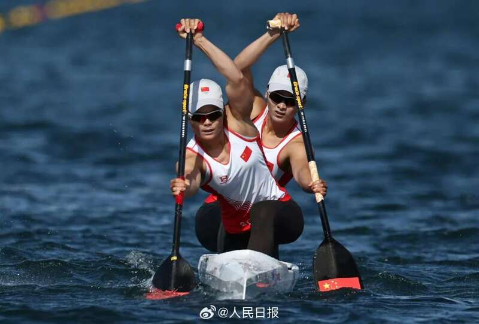
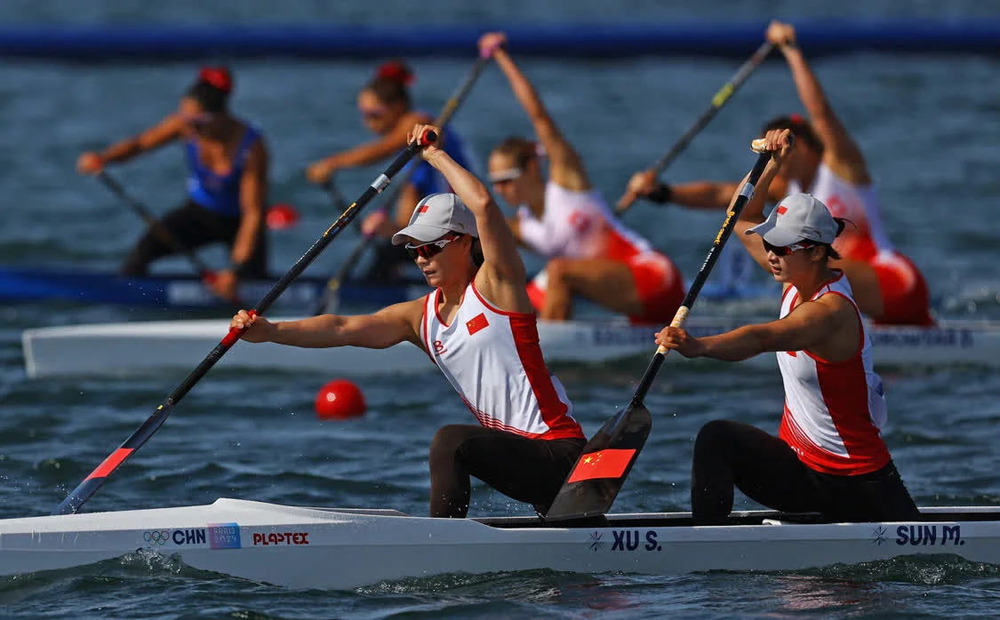
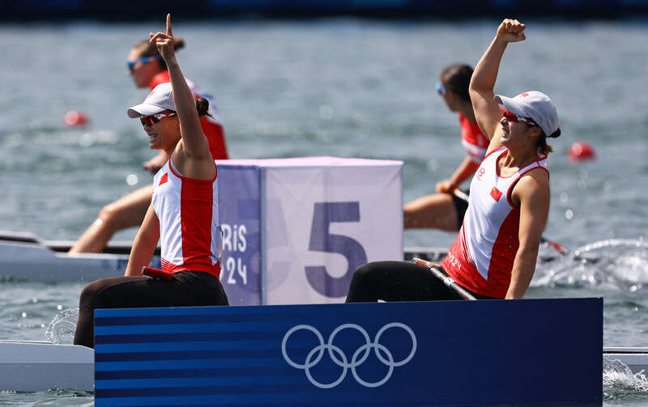

北京时间8月9日下午，巴黎奥运会皮划艇静水项目继续进行，东京奥运会冠军、中国组合徐诗晓/孙梦雅稳定发挥，在女子双人划艇500米决赛中摘得金牌。

徐诗晓/孙梦雅三次夺得皮划艇静水世锦赛冠军，作为东京奥运会该项目的金牌获得者，此次出征奥运会前，两人力争在巴黎奥运会实现卫冕。
本届奥运会，中国队获得了全部10个巴黎奥运会皮划艇静水项目的参赛资格，其中女子双人划艇500米被认为是最具竞争力的项目，中国组合徐诗晓和孙梦雅自2019年配对以来就创造了世界大赛不败的战绩。
32岁的徐诗晓是第二次征战奥运会，2017年女子划艇成为奥运会正式比赛项目后，当时已经离开赛场4年的徐诗晓为了奥运梦想毅然复出，她和比自己小9岁的孙梦雅搭档，拿到了东京奥运会该项目冠军。

按理说，奥运圆梦可以功成身退，但徐诗晓不舍得与孙梦雅这个近乎完美的组合，她表示：“东京奥运会结束之后，我完全可以退役，但是我想要让自己的人生再圆满一点。遇到一个好搭档不容易，我希望和我的搭档一起，成为皮划艇项目首次能够蝉联两届奥运会冠军的女子选手。”
这种信念支撑徐诗晓和孙梦雅继续划下去，都说打江山难、守江山更难，徐诗晓深以为然，“东京奥运会的时候，我们是属于追赶状态，现在的话，反过来我们是被追赶的一个状态。心态上其实多多少少还是会有一些变化的。”孙梦雅持相似观点，“如果我们觉得拿了冠军，没什么问题了，这时候才是最危险的。”
从2019年首站世界锦标赛开始，中国组合在世界大赛战无不胜，不过新的奥运周期她们明显感受到了来自对手的压力，2023年世锦赛决赛，前半程西班牙队表现出色，领先于中国队，中国组合奋力追赶，后半程开始与对手并驾齐驱，最终两艘艇几乎同时冲线，冲刺过后徐诗晓和孙梦雅因为失去平衡掉入水中，直到这个时候，徐诗晓和孙梦雅还不知道是否赢下比赛，赛会计时显示中国以0.141秒的微弱优势赢下冠军。
当时孙梦雅多少有些心有余悸，她回忆：“到300米的时候，我们还落后，心想完了。”徐诗晓清楚中国组合的优势一直不在前半程，但这种局面也让她感到吃惊，“确实没有预想到前半程被这样压制，而且对手直到冲刺还那么凶。”
这场比赛给两人敲响了警钟，东京奥运会以及很多场世界大赛中国组合经常能以领先2秒的优势轻松夺冠，眼下，差距看上去已经微乎其微，徐诗晓正视这样的现实，她表示：“也不是说我们没有进步，只是说对手的进步，就是其他国家的进步比我们想象的要快很多。”
为此，冬训中两人着重练了力量，经常拼到力竭。2024年5月皮划艇静水世界杯匈牙利塞格德站和波兹南站，徐诗晓/孙梦雅连续夺得金牌，再次彰显了在这个项目上的优势，她们仍然是目前地表最强女子双人划艇组合。
徐诗晓在这届奥运会之后就将退役，她希望给自己的职业生涯画上一个圆满的句号，而两人都想在巴黎成为皮划艇项目首次能够蝉联两届奥运会冠军的选手， 出征巴黎之前，徐诗晓和孙梦雅对着镜头承诺：“请永远相信中国队，相信中国皮划艇队。”
现在，两个人都做到了，继续战无不胜的她们延续了自己五年来的不败战绩，也创造了新的历史。
